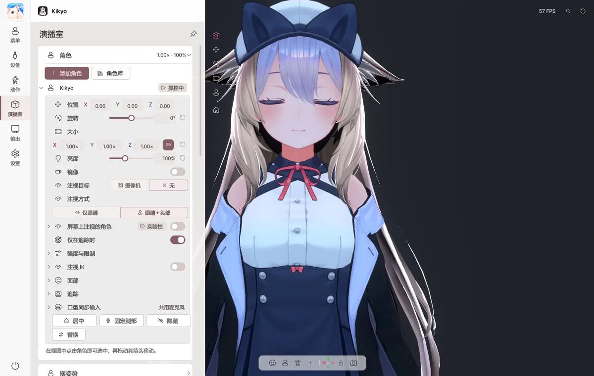
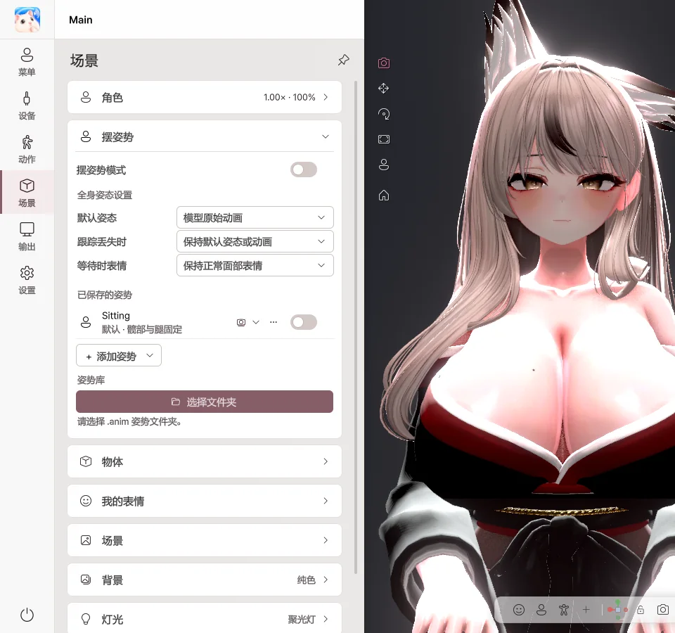
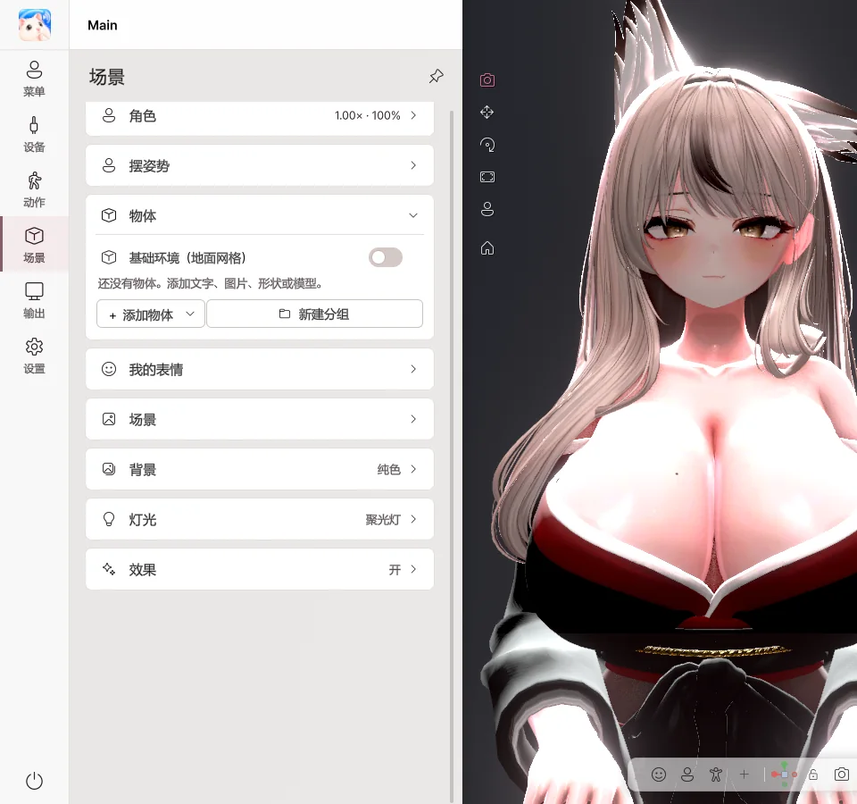
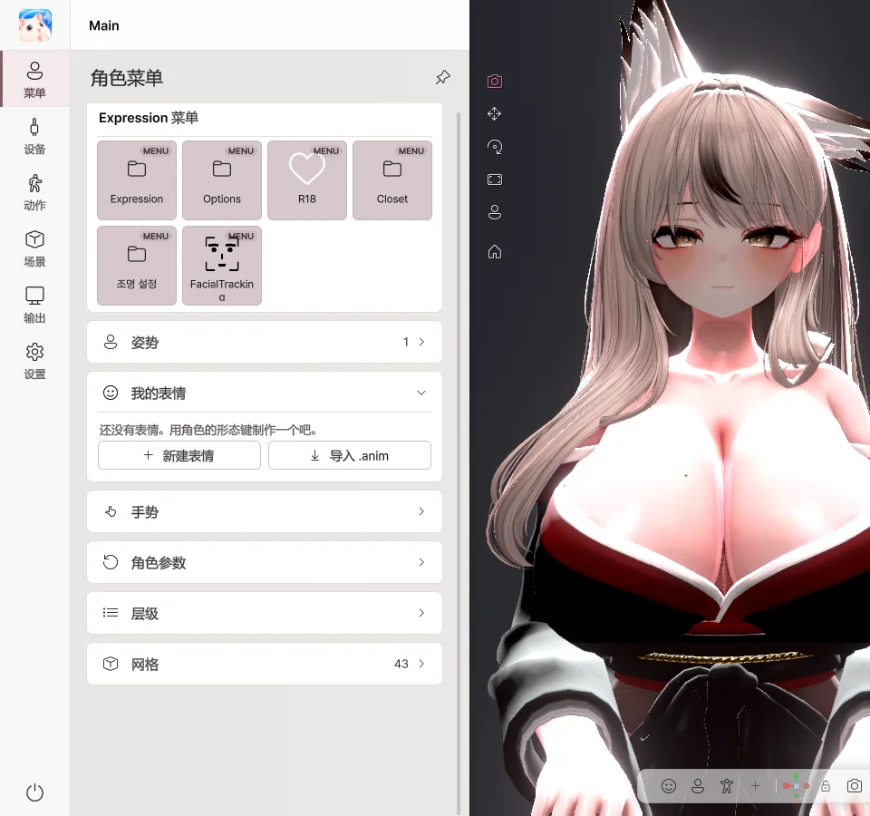

11. 摆姿势 · 物体 · 表情
Basic / Pro 功能及实际影响

| 功能 | Basic | Pro | 开启会改变什么 |
|---|---|---|---|
| 普通 Spout2 与 NDI 输出 | ✅ | ✅ | 向 OBS 发送角色画面。NDI 也属于 Basic，需安装 OBS 接收插件。 |
| 一般灯光与后处理 | ✅ | ✅ | 改变画面的颜色、阴影、辉光和背景。 |
| 姿势编辑/姿势库/道具 | — | ✅ | 修改或固定骨骼、将道具绑定在舞台或人物骨骼上。 |
| 多个角色与共同控制 | — | ✅ | 在同一场景中控制多个人物或共享追踪输入。 |
| 工作室摄像机/导演/多画面预览 | — | ✅ | 输出独立直播镜头，编辑视角不会自动改变观众画面。 |
| 每摄像机独立 Spout2 | — | ✅ | 允许向 OBS 添加最多三路额外独立画面。 |
| 远程会话 | — | ✅ | 同步其他 PC 的动作、表情、视线与经同意的模型数据。 |
| 体积光/HBAO/Beautify | — | ✅ | 添加可见光束、接触阴影与高级画面效果。 |
| MP4 录制/额外屏幕共享来源 | — | ✅ | 保存直播录像或合成更多游戏窗口/屏幕。 |
购买 Pro 不代表所有选项默认开启。多画面预览需要单独的开关，摄像机碰撞、Look At IK 等可能属于默认关闭的实验功能。建议逐项开启，在 OBS 中确认结果。
购买 Pro 不改变第三方角色素材的授权。传输和临时缓存他人的模型前必须确认原作者条款允许。
摆姿势

开启 工作室 › 摆姿势 › 摆姿势模式 后，可以直接移动骨骼来摆出姿势。
- 点击骨骼进行选择，拖动圆环即可旋转。旋转控件会按骨骼的大小显示。
- 拖动手或脚时，整条手臂 · 腿会随之移动；用 Alt+拖动 改变手肘 · 膝盖的朝向。
- 对称编辑 — 移动一侧时，另一侧也会一起移动。用 左右 翻转，或复制一侧。
- 看向镜头 · 脚贴地面 — 让面部转向镜头，让脚贴合地面。
- 锁定 — 选中的骨骼不会被追踪和动画移动。
- 用 完成 保存姿势后，可在角色菜单的 姿势 卡片中直接开启。即使点击了 放弃，也可以用 Ctrl+Z 恢复。
- 默认包含 站立休息姿势 和 坐姿。坐姿只改变骨盆 · 腿部，头部 · 手臂保持追踪。
- 制作的姿势可以通过 设为桌面姿势（手臂 · 手）或 设为休息姿势（全身）来使用。
关闭摆姿势模式前，请先保存姿势。
每个姿势的五项独立追踪
点击角色菜单或工作室中保存姿势旁的相机图标，可分别控制面部、头部、手臂、手指、身体五项追踪。启用的部位继续跟踪，关闭的部位保持姿势。设置按姿势分别保存。
- 头部OFF、面部ON可固定头部角度，同时保留表情追踪。
- 面部OFF时仍可独立使用眼睛看镜头。
- 内置坐姿固定骨盆和双腿，但最初允许五项追踪。
默认姿势与AFK待机姿势
- 默认姿势是角色正在被追踪时的基础休息姿势。
- 追踪丢失姿势是在AFK状态使用的另一套姿势。
- 待机表情是AFK时自动播放的已保存我的表情。可以不指定待机姿势，只播放表情。
- 手动应用的姿势优先于自动待机姿势。重新获取追踪后会恢复正常动作。
- 等待、过渡及恢复时间位于动作 › 身体 › AFK过渡时间。
姿势库
在 工作室 › 摆姿势 › 姿势库 中选择存放 .anim 文件的文件夹后，所有姿势都会以 当前角色的缩略图 显示。
- 会读取到子文件夹，并按姿势 · 手势 · 动作分类显示。可以使用搜索和收藏。
- 点击 应用 即可立即摆出该姿势，会动的剪辑则作为动画播放。用 解除 恢复原状。
- 用 编辑 在摆姿势模式中修改后，保存为新姿势。
- 也可以逐个导入在 Unity 中制作的人形 · 骨骼
.anim。
物体

通过 工作室 › 物体 › + 添加物体 放置文字、图片、形状和 3D 模型。
- 将 附着位置 设为头部或手，物体就会随角色一起移动。
- 双击文字即可直接编辑。
- 3D 模型需要在 Unity 中通过 Curious Bobby → Prop Exporter 制作成
.vprop文件后使用。
屏幕共享更多来源
可以在屏幕共享中叠加更多窗口或显示器。适合同时展示聊天窗口或音乐播放器等。
我的表情
用角色的形态键制作属于自己的表情。
- 点击 新建表情。
- 在旁边的面板中，像录制一样调整形态键来制作表情。用 预览强度 从无表情（0%）到表情（100%）滑动查看。
- 点击 保存 后，即可在角色菜单的 我的表情 卡片中点击开启。
- 也可以导入在 Unity 中制作的表情动画（
.anim，形态键）。会动的剪辑在表情开启期间播放。

创建新表情与导入 .anim 按钮同时显示在工作室和角色菜单。可导入静态形态键表情，也能导入多帧的 Unity .anim 表情。动画是否循环由原始片段的设置决定。拖动表情图块可调整排序；右键可添加快捷键或快捷操作。
自动表情
微笑或惊讶时，会自动显示预先设定的表情。在 动作 › 自动表情 中开启，并为微笑 · 惊讶 · 眨眼等每种表情关联要显示的表情。